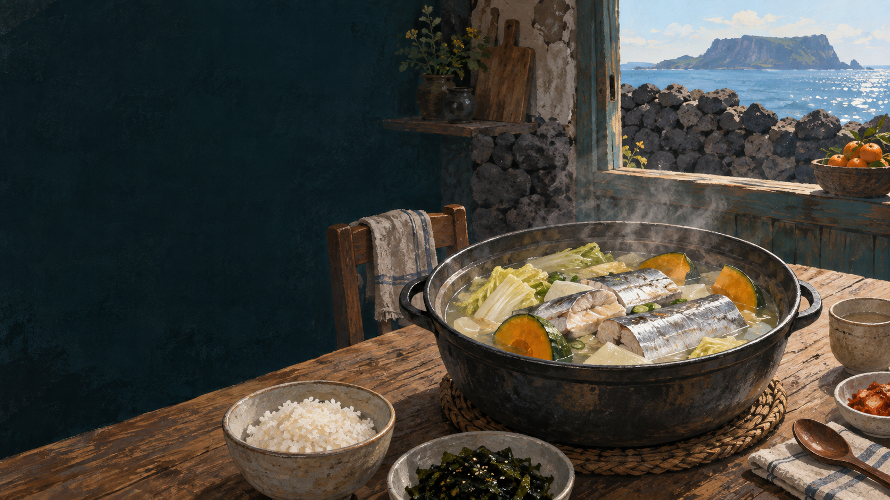

은갈치
은빛 비늘 상태를 강조하는 시장 이름으로 많이 쓰입니다.
 제주에서는 이 재료를
제주에서는 이 재료를
갈칫국의 생활문화를 바탕으로 제작한 기록화 · 생성 이미지
제주 연안에서 잡힌 갈치를 빠르게 식탁으로 옮길 수 있었던 섬의 생활은 갈칫국의 출발점입니다. 살이 무르기 쉬운 갈치는 신선할 때 토막 내 국에 넣으면 은은한 기름과 단맛이 맑은 국물에 퍼집니다.
늙은 호박이나 배추는 국물에 부드러운 단맛을 보태고, 자극적인 양념을 줄여 생선 자체의 맛을 드러냅니다. 관광객에게 낯선 한 그릇이 제주 사람에게는 계절과 선도를 기억하는 집밥인 이유입니다.
갈치는 어획 뒤 선도 변화가 빠릅니다. 가까운 바다와 포구, 시장과 부엌의 짧은 거리가 국이라는 조리법을 가능하게 했습니다.
낚시·연승 등 여러 방식으로 잡아 올립니다.
은빛 표면, 탄력, 냄새와 보관 상태를 살핍니다.
내장과 핏물을 정리하되 살이 부서지지 않게 다룹니다.
늙은 호박이나 배추로 단맛과 수분을 더합니다.
살이 익고 국물이 맑게 우러날 만큼만 끓입니다.
두 이름은 생물학적 종 구분이라기보다 잡는 방식과 유통 과정에서 쓰이는 명칭입니다. 낚시로 올린 갈치를 은갈치, 그물로 어획해 표면이 어둡게 보이는 갈치를 먹갈치라 부르는 설명이 널리 쓰이지만, 산지·판매처의 표기 기준을 함께 확인해야 합니다.
은빛 비늘 상태를 강조하는 시장 이름으로 많이 쓰입니다.
어획·마찰로 표면이 어둡게 보이는 갈치를 가리키는 경우가 많습니다.
명칭만으로 맛과 품질을 단정하지 말고 원산지·선도·어획 정보를 봅니다.
소금간해 직접 굽기
겉면의 고소함과 포슬한 살
무와 진한 양념에 조리기
양념이 밴 살과 밥을 부르는 농도
채소와 맑게 끓이기
신선한 살의 단맛과 담백한 국물
갈치 어황과 크기, 계절, 유통량에 따라 가격은 크게 달라집니다. “제철이면 늘 싸다”라고 단정하기보다 그날의 산지·어획·판매 정보를 확인하는 편이 정확합니다. 갈칫국은 좋은 양념보다 신선한 재료가 먼저인 음식입니다.
매콤한 갈치조림 이미지가 강하고, 국에 생선 토막이 들어간 모양과 향이 익숙하지 않을 수 있습니다. 첫 숟갈은 호박이나 배추의 단맛, 다음은 갈치살의 결을 따로 살펴보세요.
유통명·제철·조리법은 지역과 시기에 따라 달라질 수 있어 현장 인터뷰와 최신 표시를 함께 확인해야 합니다.